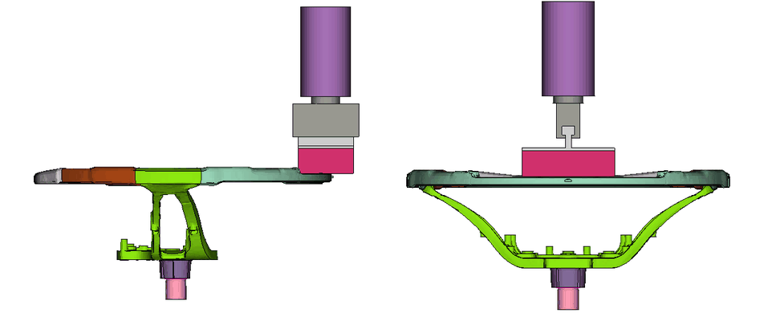
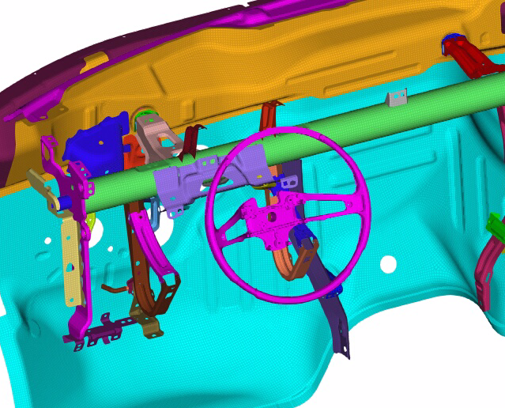
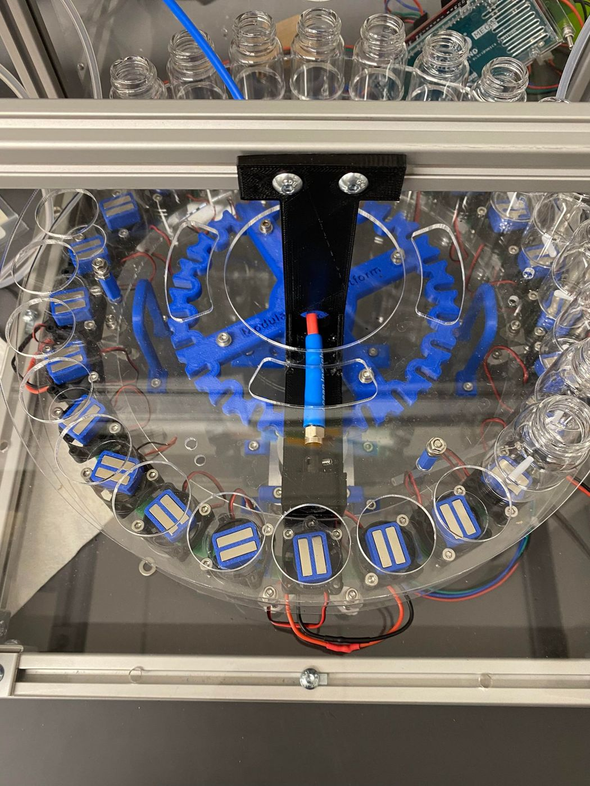
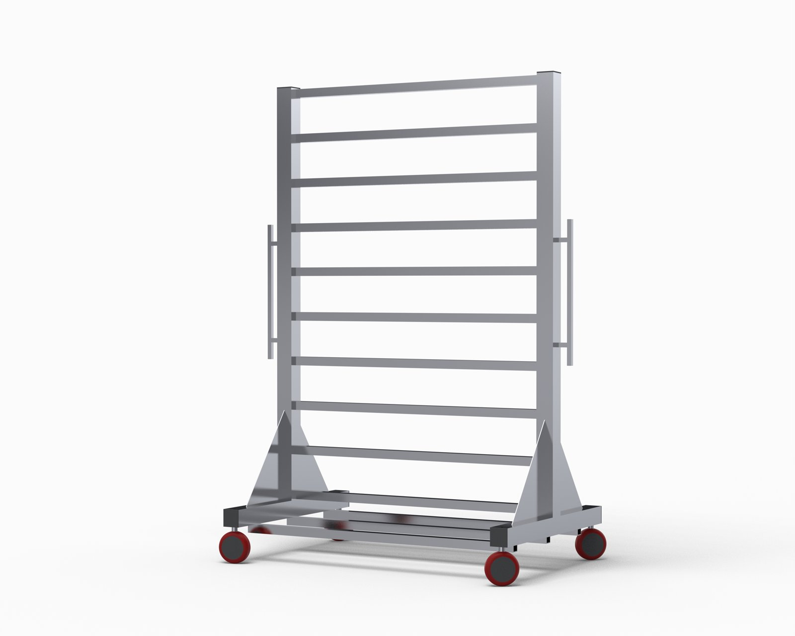
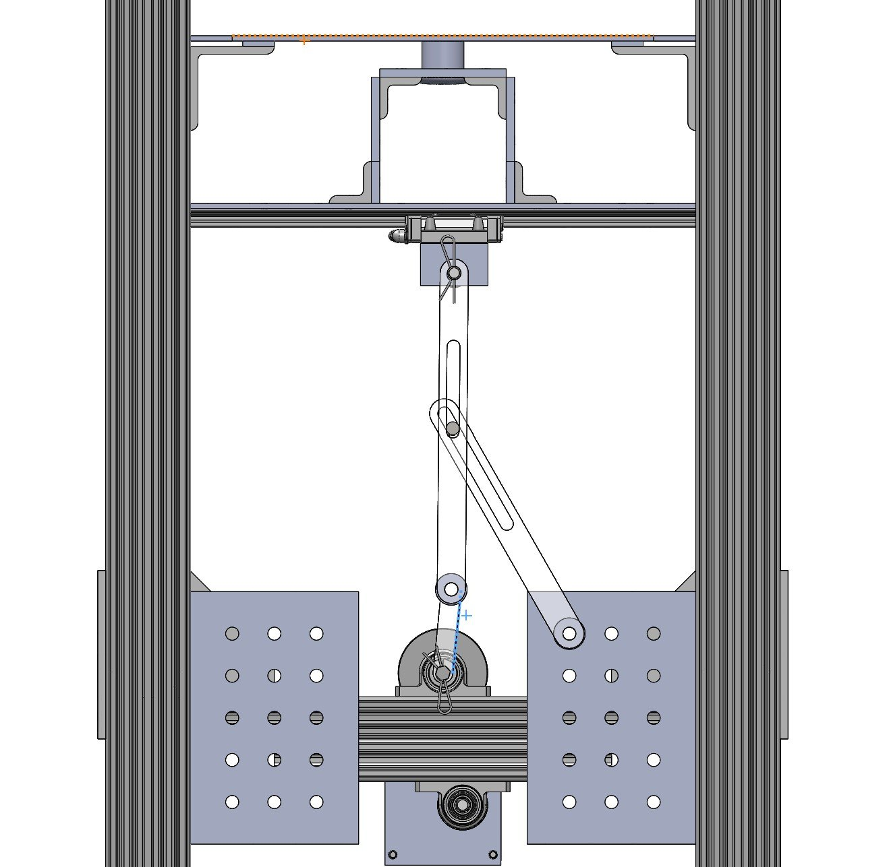
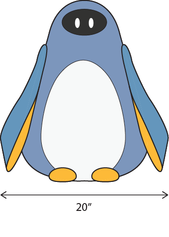
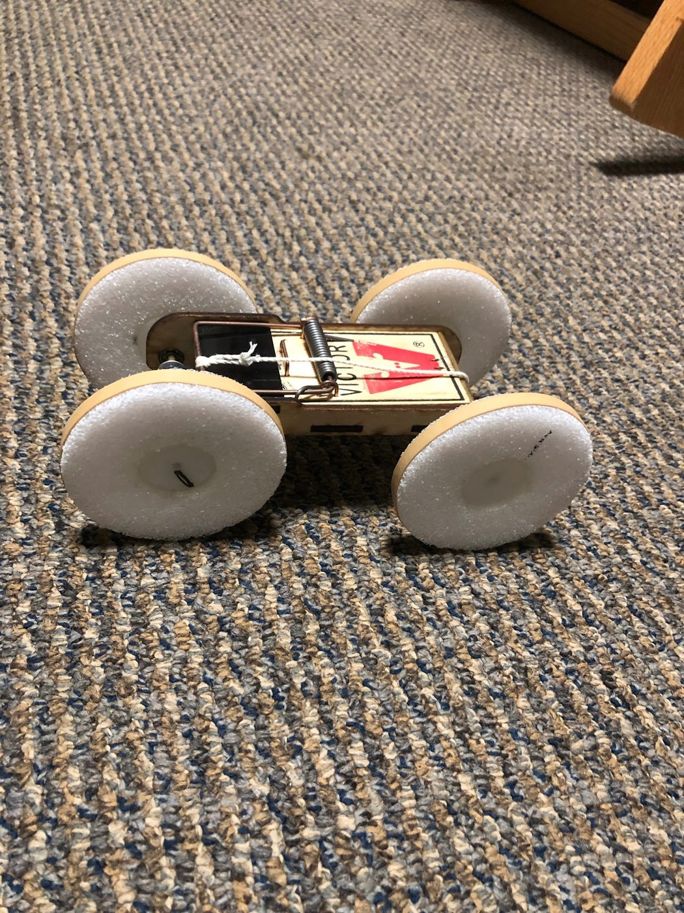

Hi, I'm Hyojun!
Mechanical engineer and graduate researcher at Carnegie Mellon
I'm working on pterosaur-inspired gliders in CMU's Robomechanics Lab. Before grad school, I spent four years at General Motors running safety simulations for car interiors, like airbag deployment and head impact.
Selected projects
9 projectsPterosaur-Inspired Glider
Adaptive wing mechanisms modeled on pterosaur flight, designed for dynamic flight stabilization.

Universal Steering Wheel Armature
One magnesium steering wheel armature designed to work across multiple vehicle platforms.

AI Steering Modal Prediction
Machine learning models that predict steering wheel and column vibration from instrument panel design choices.

Spectrophotometer Robot Fixtures
Custom fixtures that integrate a spectrophotometer with a chemical-handling robot.

MoonRanger Rover Chassis
A 24 lb carbon fiber chassis for an autonomous lunar rover, packed into a suitcase-sized footprint.

DiamondLife Product Design
SolidWorks models and photorealistic renders of display products, plus jigs and fixtures for the shop floor.

Airlock Linkage Mechanism
A laser-cut acrylic linkage that turns a motor's rotation into the push needed to open a habitat airlock.

Hug-a-Bot
A huggable penguin robot that sends and receives hugs between loved ones during times of isolation.

Mousetrap Ramp Climber
A laser-cut, four-wheel-drive mousetrap car designed to climb as high up a ramp as possible.
About
I'm pursuing my M.S. in mechanical engineering at Carnegie Mellon, where I also earned my B.S. My research in the Robomechanics Lab focuses on gliders with adaptive, pterosaur-inspired wings.
At General Motors I supported vehicle programs with interior safety simulations such as airbag deployment and head impact. Along the way I led a universal steering wheel armature project and helped build an AI tool that predicts steering vibration.
Experience
-
Aug 2026 – Present
CMU Robomechanics Lab
Graduate Research Student
Developing pterosaur-inspired gliders with fixed and retractable wings, from SolidWorks design to 3D-printed and machined prototypes. I analyze the wings in XFOIL, XFLR5 and AVL with CFD validation, and build Isaac Lab simulations to train wing control policies with reinforcement learning.
-
May 2022 – Aug 2026
General Motors
Virtual Design Development & Validation Engineer (CAE Engineer)
Supported vehicle programs with interior safety simulations such as airbag deployment and head impact, and served as the interior CAE point of contact for two high-priority programs, correlating models with supplier test data. Led a universal steering wheel armature project and helped build a PhysicsAI tool that cut HPC demand and manual effort by 25%.
-
Jan 2022 – May 2022
CMU Jayan Lab
Undergraduate Research Assistant
Designed fixtures in SolidWorks and fabricated them with 3D printing and laser cutting to integrate a spectrophotometer with a chemical-handling robot, then assembled the system and troubleshot hardware and software issues.
-
May 2021 – Aug 2021
General Motors
EXCEL Additive Manufacturing Intern (Remote)
Trained on additive manufacturing processes, materials and application selection. Identified 3D-printable parts from Service Parts Assistance Center case reports in Teamcenter and prototyped them, working with Service Parts and Supplier Quality engineers to choose the best process and material for each part.
-
Sep 2020 – Apr 2021
DiamondLife
Mechanical Design Engineer (Freelance, Part-Time)
Designed new products and improved existing ones in SolidWorks, created photorealistic renders for the company website, and designed jigs and fixtures that improved the manufacturing process.
-
May 2020 – Aug 2020
LigasTek
Mechanical Engineering Intern
Designed, prototyped and tested enclosures for PCBs and other hardware, built an Arduino temperature and humidity sensor circuit for factory monitoring, and improved an energy harvesting module to collect data and display it in MATLAB.
Education
-
Aug 2026 – May 2028 (expected)
Carnegie Mellon University
M.S. in Mechanical Engineering
-
Aug 2018 – May 2022
Carnegie Mellon University
B.S. in Mechanical Engineering
Skills
- CAD
- Siemens NXSolidWorksFusion 360
- CAE
- ANSYSLS-DYNAOptiStructANSAHyperMeshnCodeDesignLife
- Code
- PythonC++MATLAB
- ML & robotics
- PyTorchIsaac LabMuJoCo